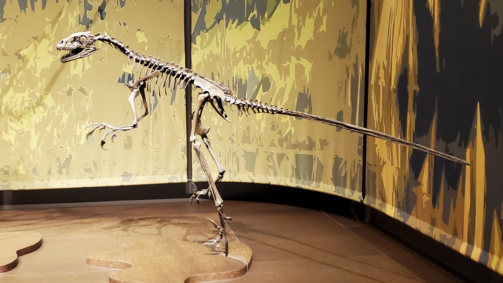

History:

The first known Dromaeosaurus remains were discovered by paleontologist Barnum Brown during a 1914 expedition to Red Deer River on behalf of the American Museum of Natural History.
The name dromaeosaurus comes the generic name is derived from the Greek words, (dromeus) meaning 'runner' and (sauros) meaning 'lizard'.
Appearance:
Dromaeosaurus was a medium-sized carnivore, about 2 m (6 ft 7 in) in length and 16 kg (35 lb) in body mass
Its mouth was full of sharp teeth, and it probably would have had a sharply curved "sickle claw" on each foot.
Dromaeosaurus had a relatively robust skull with a deep snout. Its teeth were rather large and were shaped like a curved cone with a coat of enamel covering the crown.
Other:
Dromaeosaurus had a bite three times more powerful than a Velociraptor.
The Dromaeosaurus was the first of the sickle-clawed dinosaurs to be discovered.
"It was a small, feathered predator often considered a specialized, intelligent hunter".